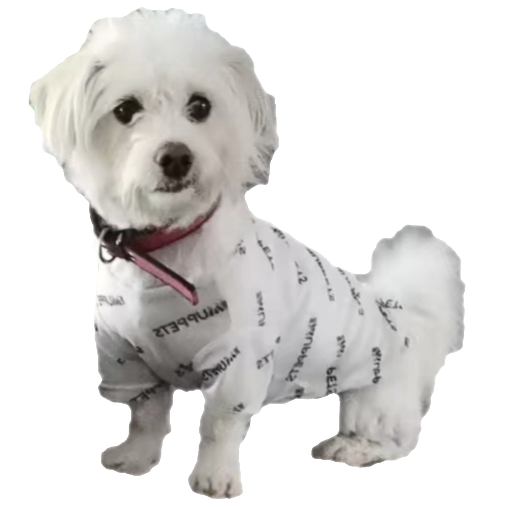

Research
More in progress...
Embodiment Meets Environment: Toward Context-Aware, Safe Physical Caregiving Robots
Zhanxin Wu,
Ruofei Tong,
Jiaying Fang,
Tapomayukh Bhattacharjee
Robotics: Science and Systems (RSS), 2026
|
Beyond Failure Recovery: An Engagement-Aware Human-in-the-loop Framework for Robotic Systems
Jiaying Fang,
Joyce Yang,
Zhanxin Wu,
Bohan Yang,
Tapomayukh Bhattacharjee
Robotics: Science and Systems (RSS), 2026
|
Impact of Different Failures on a Robot's Perceived Reliability
Andrew Violette,
Zhanxin Wu,
Haruki Nishimura,
Masha Itkina,
Leticia Priebe Rocha,
Mark Zolotas,
Guy Hoffman,
Hadas Kress-Gazit
International Conference on Robotics and Automation (ICRA), 2026
|
SAVOR: Skill Affordance Learning from Visuo-Haptic Perception for Robot-Assisted Bite Acquisition
Zhanxin Wu,
Bo Ai,
Tom Silver,
Tapomayukh Bhattacharjee
Conference on Robot Learning (CoRL), 2025
|
Open Scene Graphs for Open World Object-Goal Navigation
Joel Loo*,
Zhanxin Wu*,
David Hsu
International Journal of Robotics Research (IJRR), 2025
|
Towards Embodiment Scaling Laws in Robot Locomotion
Bo Ai*,
Liu Dai*,
Nico Bohlinger*,
Dichen Li*,
Tongzhou Mu,
Zhanxin Wu,
K. Fay,
Henrik I. Christensen,
Jan Peters,
Hao Su
Conference on Robot Learning (CoRL), 2025
|
OpenRoboCare: A Multi-Modal Multi-Task Expert Demonstration Dataset for Robot Caregiving
Xiaoyu Liang,
Ziang Liu,
Kelvin Lin*,
Edward Gu*,
Ruolin Ye,
Tam Nguyen,
Cynthia Hsu,
Zhanxin Wu,
Xiaoman Yang,
Christy Sum Yu Cheung,
Harold Soh,
Katherine Dimitropoulou,
Tapomayukh Bhattacharjee
International Conference on Intelligent Robots and Systems (IROS), 2025
|
Invariance is Key to Generalization: Examining the Role of Representation in Sim-to-Real Transfer for Visual Navigation
Bo Ai,
Zhanxin Wu,
David Hsu
International Symposium on Experimental Robotics (ISER), 2023
|
Real-Time Corporate Carbon Footprint Estimation Methodology Based on Appliance Identification
Guolong Liu,
Jinjie Liu,
Junhua Zhao,
Jing Qiu,
Yiru Mao,
Zhanxin Wu,
Fushuan Wen
IEEE Transactions on Industrial Informatics, 2022
|
A Temporal Convolutional Neural Network with Attention Mechanism for Industrial Non-Intrusive Load Monitoring
Guolong Liu,
Gaoqi Liang,
Huan Zhao,
Junhua Zhao,
Jinjie Liu,
Zhanxin Wu
IEEE Energy Internet and Energy System Integration (EI2), 2021
|
Thank you for visiting my pawrent's website 🐾 🐾 🐾 
Template from Jon Barron. Last updated: Jun 2026
|
|
{kind=link}